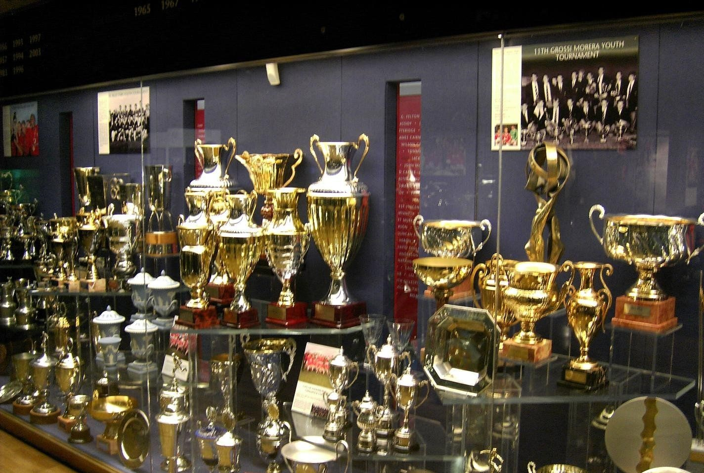
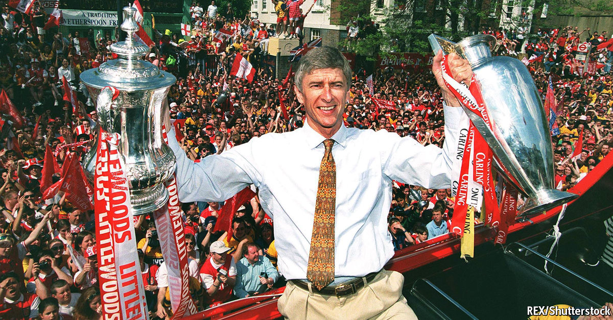

Arsenal is one of the most successful clubs in English football. Arsenal have won 13 League Titles, 14 English Football Association Cups (the most in the history of the competition), and 16 English Super Cups.

A relatively unknown Frenchman named Arsene Wenger became the manager of Arsenal in 1996. Under Wenger, Arsenal saw unprecedented levels of success for the club.
Wenger brought in future club legends like Dennis Bergkamp, Robert Pires, Freddie Ljungberg, and Thierry Henry. With these players, Wenger led the club to its first domestic double, winning the FA Cup and the Premier League Title back to back.